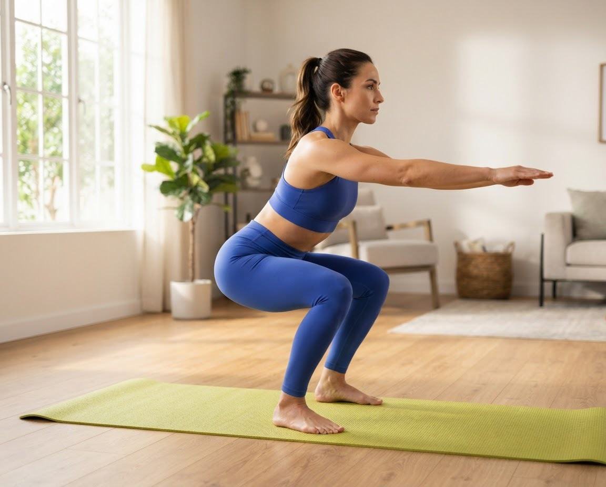

Ejercicios / Sentadillas

◉ Vista previa · 00:18Sentadillas
Un movimiento esencial para fortalecer piernas y glúteos mientras mejoras estabilidad y movilidad.
◉ DificultadFácil
◷ Duración10 min
▣ MaterialSin material
Cómo hacer el ejercicio
- Coloca los pies un poco más abiertos que las caderas.
- Lleva la cadera atrás y baja manteniendo el pecho erguido.
- Empuja el suelo con los talones y vuelve a la posición inicial.
3 series · 12 repeticiones · descansos incluidos